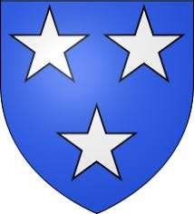

Antavla
6009129 Margaret Moray
Blev högst 46 år.

Far:
Andrew Murray 2nd of Tullibardine & Bothwell (<1284 - 1332)
Född:
1318 Scotland.
[1]
Död:
1364 Scotland.
[1]
Barn med
6009128 William Fraser of Cowie & Durris (1318? - 1346)
Barn:
Alexander Fraser 1st of Philorth (1339? - <1411)
Personhistoria
Årtal
Ålder
Händelse
1318?
Partnern
6009128 William Fraser of Cowie & Durris
föds omkring 1318 Scotland
[1]
1318
Födelse 1318 Scotland
[1]
1332
Fadern
12018258 Lord Andrew Murray 2nd of Tullibardine & Bothwell
dör 1332-10-07 Pearthshire, Scotland
[1]
1339?
Sonen
3004564 Alexander Fraser 1st of Philorth
föds omkring 1339 Cowie, Kincardineshire, Scotland
[1]
1346
Partnern
6009128 William Fraser of Cowie & Durris
dör 1346-10-17 Durham, England
[1]
1364
Död 1364 Scotland
[1]
Källor
[1]
wikitree